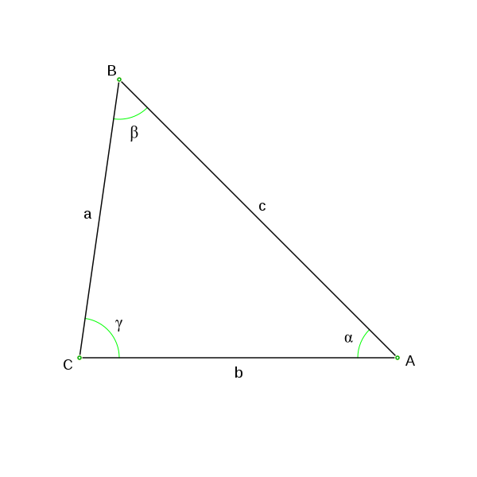
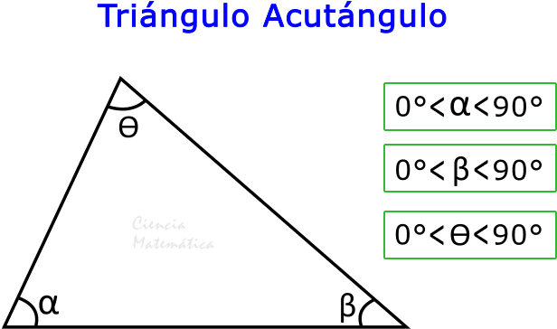
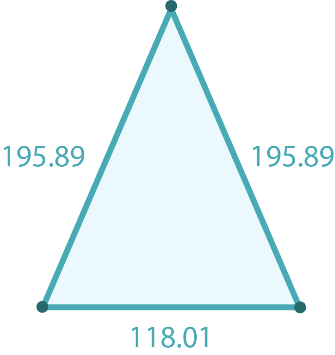
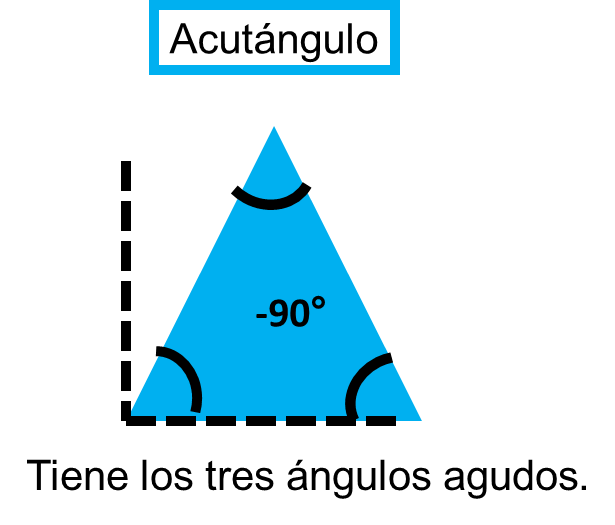

El triángulo acutángulo o agudo es una figura geométrica, el cual tiene tres ángulos internos agudos, es decir, la medida de cada uno de sus ángulos es menor a 90°.

Donde: A < 90°, B < 90° y C < 90°.
Conociendo los ángulos del triángulo es posible por observación identificar que todos sus ángulos sean menores a 90°.
Conociendo los lados del triángulo se puede emplear el teorema de Pitágoras, en donde: c2
Considerando que “c” es el lado mayor del triángulo, es una forma de comprobar si es un triángulo acutángulo.
Existen triángulos que cuentan con las características del triángulo acutángulo y también presentan otras características que representa al otro tipo de triángulo.


